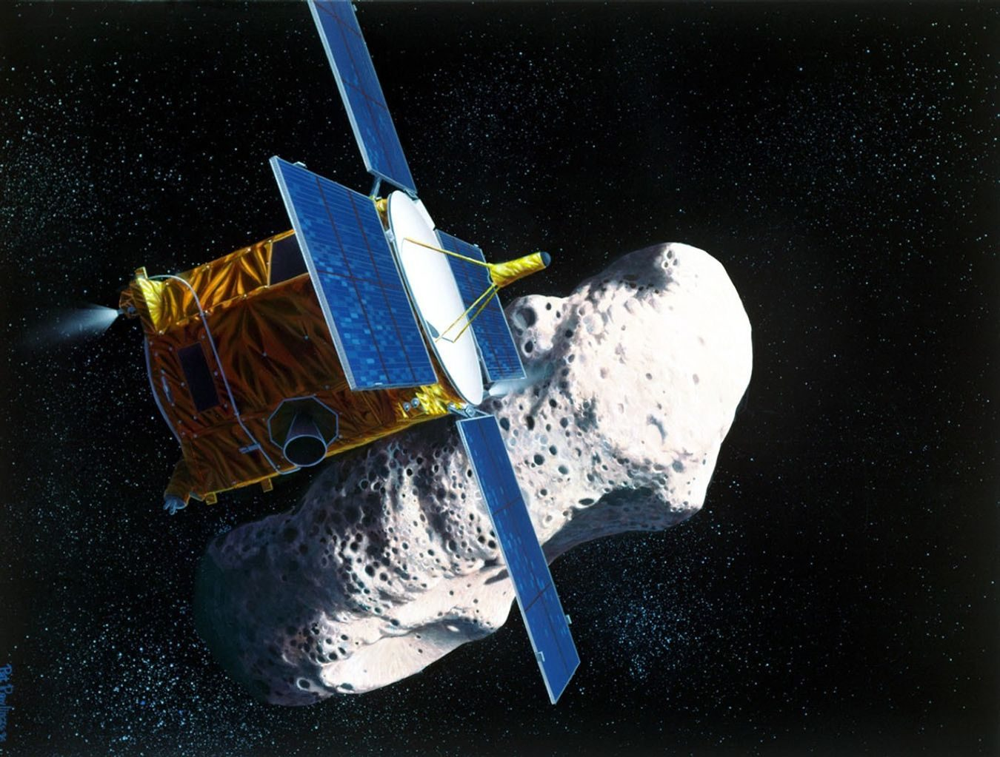
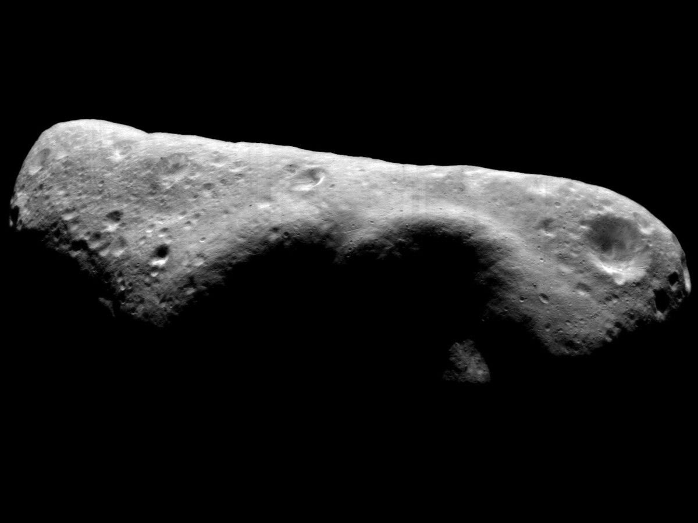

Home / Deep space / NEAR Shoemaker
NEAR Shoemaker
Built to orbit an asteroid. It landed on one too.
Deep space1996-2001Asteroid 433 Eros

At a glance
| Launch | 17 Feb 1996 |
|---|---|
| Launch mass | about 800 kg |
| Instruments | Imager, infrared spectrometer, X-ray and gamma-ray spectrometer, laser rangefinder, magnetometer |
| Target | 433 Eros, about 34 km long |
| Landing | 12 Feb 2001 |
Overview
NEAR nearly failed on the way. In December 1998 an engine burn to enter orbit around Eros ended early and contact was lost for hours. Engineers regained control and flew past Eros instead, then returned a year later to enter orbit after all.
NASA's NEAR was the first spacecraft to orbit an asteroid and also was the first to land on one.
NEAR's landing on Eros marked the first time a U.S. spacecraft was the first to land on a celestial body, having been beaten by the Soviets in landing on the Moon, Mars, and Venus.
Remarkably, the spacecraft – which was not designed as a lander – survived touchdown on the asteroid and returned valuable data for about two weeks.
NASA renamed the spacecraft NEAR Shoemaker in honor of renowned geologist Eugene M. Shoemaker (1928–1997).
Last contact with NEAR was Feb. 28, 2001, the spacecraft having succumbed to the extreme cold.
Where it began
NEAR was the first mission of NASA's Discovery programme of faster, cheaper missions, and was later renamed after geologist Eugene Shoemaker.
Near Earth Asteroid Rendezvous (NEAR) was the first mission flown under NASA’s Discovery program, a series of low-cost (less than about $150 million in mid-1990s dollar amounts) planetary science projects that were selected competitively and led by a principal investigator rather than a NASA manager.
NEAR’s primary goal was to rendezvous with the minor planet 433 Eros (an S-class asteroid), approximately 221 million miles (355 million kilometers) from Earth, and to gather data on its physical properties, mineral components, morphology, internal mass distribution, and magnetic field. The spacecraft was the first to rely on solar cells for power during operations beyond Mars orbit.
The mission
After flying past asteroid Mathilde, it orbited Eros from February 2000. As the mission came to its end, the team tried something nobody planned.
On the way to its primary mission, NEAR performed a 25-minute flyby of the asteroid 253 Mathilde on June 27, 1997. The closest approach was about 750 miles (1,200 kilometers) at 12:56 UT. During the encounter, the spacecraft photographed 60 percent of the minor planet from a range of 750 miles (1,200 kilometers).
After a course correction on July 3, 1997, NEAR flew by Earth on Jan. 23, 1998, at 07:23 UT for a gravity assist on its way to Eros. The closest approach was about 335 miles (540 kilometers).
Through 2000, NEAR’s orbit was shifted in stages to permit specific research programs. There were a few problems in the lead-up to the landing on the asteroid. For example, on May 13, 2000, controllers had to turn off the near-infrared spectrometer due to an excessive power surge.
By April 30, 2000, the spacecraft was in its operational orbit at an altitude of about 31 miles (50 kilometers) from Eros’ center.
On July 13, 2000, NEAR entered an even lower orbit at about 22 miles (35 kilometers) that brought the vehicle to about 12 miles (19 kilometers) from the surface. After about 10 days, NEAR moved back to a higher orbit.
On Oct. 26, 2000, NEAR performed another close flyby, this time to about 3 miles (5.3 kilometers) above the surface.
By the end of the year, the spacecraft had entered a circular 22-mile (35-kilometer) low orbit around the asteroid and began to make a series of very close passes – on the order of about 3 to 4 miles (5 to 6 kilometers) – above the surface.
How it worked
The team slowly spiralled it lower, taking sharp pictures, then guided it down for a controlled descent, landing at a gentle walking pace.
What it found
Eros is a solid, cratered body covered in boulders and fine dust. NEAR's gamma-ray instrument measured the composition from only metres above ground.
The information gathered indicated that the 4.5 billion-year-old asteroid is covered with craters and is less dense than previously believed.
NEAR also found that the asteroid has two medium-sized craters, a long surface ridge, and a density similar to Earth’s crust. After several more trajectory adjustments, NEAR finally moved into orbit around Eros at 15:33 UT Feb. 14, 2000, roughly a year later than intended, becoming the first human-made object to orbit a minor planet. Orbital parameters were about 200 × 225 miles (321 × 366 kilometers).
NEAR data showed that Eros had no magnetic field. It mapped more than 70 percent of the surface using the near-infrared spectrometer and provided important data about the asteroid’s interior. The spacecraft returned about 10 times more data than originally planned, including 160,000 images.
Why it was left behind
The spacecraft was never designed to land, and had little fuel left. It survived anyway and listened for weeks before the cold stopped it.
Following a slow, controlled descent, during which it took 69 high-resolution photos of Eros, NEAR touched down on Eros at a gentle 4 miles per hour (6.4 kilometers per hour), just south of a saddle-shaped feature named Himeros, on Feb. 12, 2001, at 19:44 UT.

This was the first time a U.S. spacecraft was the first to land on a celestial body, having been beaten by the Soviets in landing on the Moon, Mars, and Venus.
Remarkably, the orbiter survived contact and returned valuable data, especially from its gamma-ray spectrometer, for about two weeks.
The last contact with NEAR was Feb. 28, 2001, the spacecraft having succumbed to the extreme cold (minus 279 degrees Fahrenheit or minus 173 degrees Celsius). NASA’s attempt to contact the probe nearly two years later on Dec. 10, 2002, was unsuccessful.
Where it is now
It rests on Eros in a former crater of the asteroid's surface, the first spacecraft to do so.
Earlier, on March 14, 2000, a month after entering asteroid orbit, NASA renamed the NEAR spacecraft NEAR Shoemaker in honor of Eugene M. Shoemaker (1928–1997), the renowned geologist.
Over a year of orbiting, NEAR measured Eros's shape, mass, density and surface composition, returning about 160,000 images. The landing was not part of the original plan, but the team tried it as a bonus, and it succeeded.
Timeline of events
- Jun 1997 Flies past asteroid Mathilde
- Dec 1998 Engine burn fails; a rescue flyby of Eros follows
- 14 Feb 2000 Enters orbit around Eros
- 12 Feb 2001 Lands on Eros
- 28 Feb 2001 Final contact
2001
Last contact on 28 February, two weeks after landing.
Read more on NASAText and images adapted from NASA mission pages.